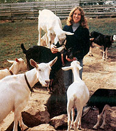

MOTHER feels strongly that youths can be creative "doers," working toward more ecological and self-reliant lifestyles . . . whether their tasks be raising chickens on a farm or maintaining rooftop container gardens in the city. To support the endeavors of our often overlooked "underage" citizens, we're glad to publish well-written articles from younger children and teenagers concerning projects they've undertaken. However, we recommend that all young authors query (that is, send us a letter telling about the story they'd like to do) before writing a full article. Address inquiries to Mother's Children, THE Mother Earth News, 105 Stoney Mountain Rd., Hendersonville, NC 28791.
When my family moved to the country eight years ago, the very first animal we purchased was a grade (or mixed-breed) goat to provide us with some milk. We've come a good way since then. Now we have a purebred French Alpine buck, and fourteen does that give us plenty of milk for our family and some extra to sell. Taking care of the goats is my responsibility. Selling their surplus milk to our friends and neighbors helps the animals pay their way and earns me some extra money.
If you want to raise goats, the first thing you'll have to do is to pick a breed. You'll probably have to experiment some until you find the one that is best suited to your climate and needs. After our original grade doe had come and gone, we purchased two purebred, registered Nubian does for $100 each. They were very beautiful and gave rich, creamy milk. Then a friend sold us our French Alpine buck, and we got two grade Alpine does. We soon found that Alpines give more milk than Nubians. Today most of our herd is Saanen-Alpine mixed and provides plenty of good-quality milk.
I drylot-feed my goats, since I don't have enough good pasture to provide all the grass they need for good production. I feed them a highprotein dairy goat grain formula (I found the recipe in Jerry Belanger's Raising Milk Goats the Modern Way), which I have mixed up at our local grain mill. I also feed them a mixed alfalfa hay. I give each doe one pound of dry matter (usually about evenly balanced between grain and hay) for each pound of milk she's producing.
The doe will usually come into heat after the first fall frost, though I've had some does be as late as December. If you keep a buck near the does, they will probably come into heat sooner. But be sure that he's in a stall with high sides-most bucks are good jumpers! (We've had bucks in stalls that we thought were tall enough . . . and ended up with some unplanned breedings!)
The doe will stay in heat for about three days. It's best to breed her on the first day, because then you're more likely to get doe kids. If she's not bred during these three days, you'll have to wait another three weeks for her next heat.
I recently tried an experiment on one of our does: I bred her once or twice every single day she was in heat. The result was quadrupletsthree does and one buck! I'm going to repeat that procedure on half my herd, the does randomly selected, over the next four years to try and find out if more breeding consistently yields more kids.
About 145 to 155 days after the doe's been bred, she'll kid (give birth). I think kidding is the most exciting part of goat raising. I start checking my does frequently and carefully about 140 days after they're bred. If one is getting ready to kid, she'll become quite nervous and appear "hollow" in the flank and on either side of the tail. She may also discharge a thin mucus several days before kidding. When a more gelatinous and yellow discharge appears, she's really ready to give birth.
In a normal birth, the kid's forelegs appear first with the nose between them. But sometimes there are problems. If one leg is turned back, I usually disinfect my hand with iodine, reach inside the doe, and try to pull the leg back into the normal position. Sometimes my sister has to use her small hands to do this job! Once one of our does had a breech (bottom first) birth. This kid died after a few days (it appeared to have a broken back).
Other times a kid is too large to come out. In that case, I usually call our local veterinarian for help. A LaMancha doe we owned had this problem two years in a row. The first time, when the doe had twins, the vet had to hook a small chain around one kid's lower jaw and really pull hard. That broke the doe's tail and the kid's jaw. The second kid was also damaged by its difficult birth and died about a week later.
The second year, the LaMancha had just one big buck kid. He died inside the doe, so the vet cut off the kid's head to get him out. This horrified our five city visitors who were observing, but apparently it's standard veterinary procedure.
Most times, of course, the kid is born perfectly healthy. The dam (mother) licks it clean, and it's up and ready to nurse within an hour of its birth! I don't let it nurse, though, but feed it the dam's colostrum (first milk) from a bottle. I do this because we want the doe's milk. Also, we want to control how much milk the kid gets, and we don't want the kid to get too attached to its mother. I have tried leaving the kid with the dam for about three days, but by that time they have bonded emotionally, so it's very hard to separate them.
One year we left two kids with their dam as an experiment. Now every other year we had taken this doe's kids away immediately. So when we left these two kids with her, she didn't know what to do! But we were so busy with other activities that we forgot to keep a good check on how they were doing.
Three days later, we found the kids nearly dead in the stall and the dam's udder extremely full of milk: She didn't know how to nurse them, so they were starving. They died soon afterward. We learned our lesson from that experience and now always keep a good eye on our animals. (We later learned that there is a way to revive starving kids: Put them up to their noses in warm water, stick a stomach tube down their throats, and feed them warm milk through that.)
I've made other mistakes. One year I lost five valuable doe kids from enterotoxemia (a major goat disease). Since then, I have been sure to vaccinate all of my does and kids, to see that the kids have fresh, clean water, and to keep their feeding dishes absolutely sterilized. I've also had a few kids die of pneumonia, caused by a damp stall or cold drafts in the barn.
It is very important to have a regular milking time. The does count on this! I've found that if I don't milk at regular intervals, the goats produce less milk. The best thing to do is to milk your goats morning and evening, about twelve hours apart.
We use a stanchion (a milking stand). It's simply a platform with a ramp, feeding box, and head restraint. (We got the design from the Rodale book Build It Better Yourself.) The doe jumps up to feed, and we lock her head in place. We used to just tie goats up. They moved around so much that milking was a backbreaking job.
Before milking, you should wash the udder with warm water and soap and-when necessary-clip away any excess hair. This helps keep the milk clean. After the doe has been milked, dip the tip of each nipple in an iodine disinfectant. This helps prevent mastitis, a bacterial disease which can ruin a good milk goat forever. One of my best milkers got mastitis and never regained her former level of production. We sold her-now she acts as a "guard dog" for a flock of sheep!
After you're done, bring the milk inside right away and pour it through a milk strainer. Otherwise, it may get a nasty "goaty" taste. Although goat's milk can be drunk raw (I find it much tastier this way), most people pasteurize it first to kill any potentially harmful bacteria. To do this, just heat the milk up to 165°F, then quickly cool it down by putting the pan in cold water. Always keep fresh goat's milk stored in a refrigerator.
The legal requirements for marketing goat's milk vary from state to state. If you're planning to sell large quantities of milk, you'll certainly want to consult your local health department. Many goat owners make unlicensed sales of milk to neighbors. Such "bootlegging" is widespread. I do it, and so does everyone else I know around here who sells milk. (Kids who have lemonade stands in the suburbs are also running "bootleg" operations!)
If you sell your goats' milk, you must make sure it's clean and pure. I sterilize my milk pail, strainer, and jars with a bleach-and-water solution. I make sure my goats are clean and have clean quarters. And I check every doe regularly for any signs of illness (I always isolate an ill goat and discard its milk). And I pasteurize the milk I sell when the buyer requests it. [EDITOR'S NOTE: The FDA is currently considering outlawing all sales of raw milk because of possible health hazards.]
The first thing to do when you are planning to sell milk is to develop a milk route. You can find customers by running an ad in the local newspaper, by putting a Goat Milk For Sale sign beside the road, or by using word of mouth (which is what I do). Tell people that goat's milk is not just for sickly people or children who are allergic to cow's milk. Instead, it is more digestible than cow's milk (and somewhat more nutritious), naturally homogenized, and delicious! And milk from your homegrown goats won't contain any processing additives or pollutants.
I usually sell the milk for $1.00 a quart ($1.25 delivered); many health food stores sell goat's milk for as much as $3.00 a quart. It costs me approximately $150 to drylot-feed one goat for a year and about $50 to cover miscellaneous expenses such as veterinary bills. A good doe will give about 200 gallons (800 quarts) of milk a year. So if I sell half of that milk at $1.00 a quart, I'll gross $400, and, after subtracting expenses, have a net profit of $200. And that's not even counting the 100 gallons of milk my family gets to drink for free!
It takes me about an hour a day to care for my herd of 15 goats. Caring for one doe would take hardly any time at allmaybe 20 minutes a day, once you had her housing and all established.
If you decide to raise goats, you, too, will find that it's a fun and challenging project, and a way to make a little money, to boot.
Good luck!
|
 |
|
|